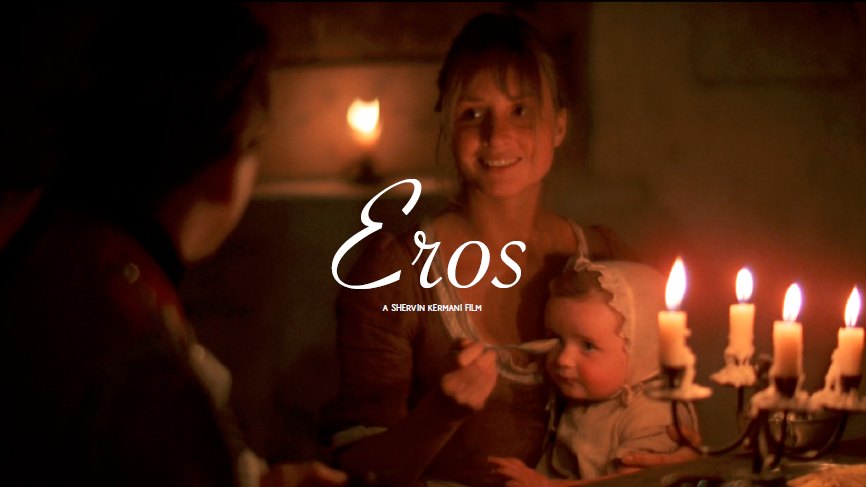
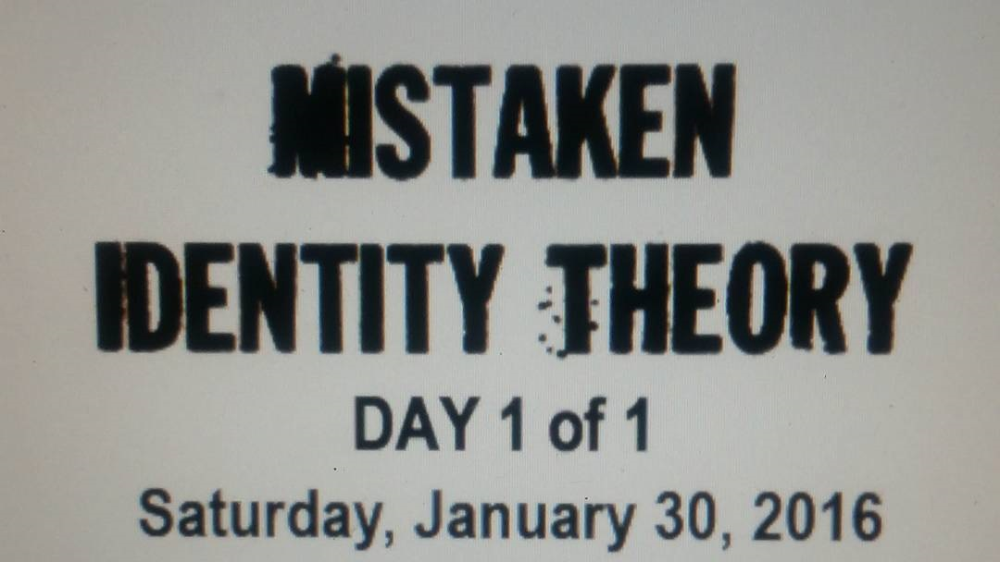
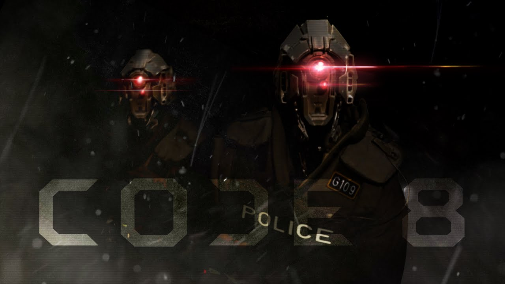
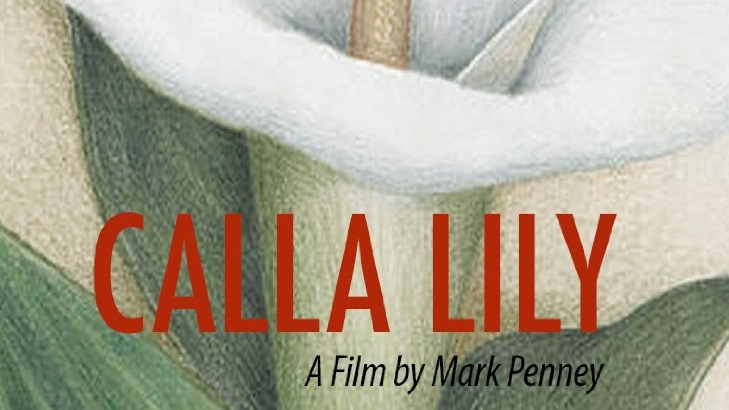

Hi, I'm Matthew Mitchell
I work primarily in the visual effects and art departments, but also assist as an on-set production assistant. I enjoy the collaborative process of film-making and engineering solutions to set problems.
Hover over the projects below to see my involvement or check out my IMDb profile.
-
Incorporated
VFX Coordinator - tracking artist progress, asset management, participating in shot reviews and distributing notes, coordinating with external VFX studios
-
The Rise of Eve Fantastic
PA/Script Supervisor - assisting with lighting setup, general set work and problem resolution, fill-in script supervisor
-
Eros
Set Builder/Art PA - drywalling set, building fireplace buildout/overmantel, resolving other construction issues that arose
-
Mistaken Identity Theory
Set PA - general set work as directed by 1st AD, assisting grip and gaffer, loading cube trucks
-
Code 8
Art PA/Set Dresser - supervised use of firearms on set, managed props and fixed costume issues, prepared crime scene set
-
Toronto Star
Boom Op
-
Calla Lily
Prop Master/Boom Op - worked various roles on this indie feature, purchased props, staged scenes, operated boom for sound